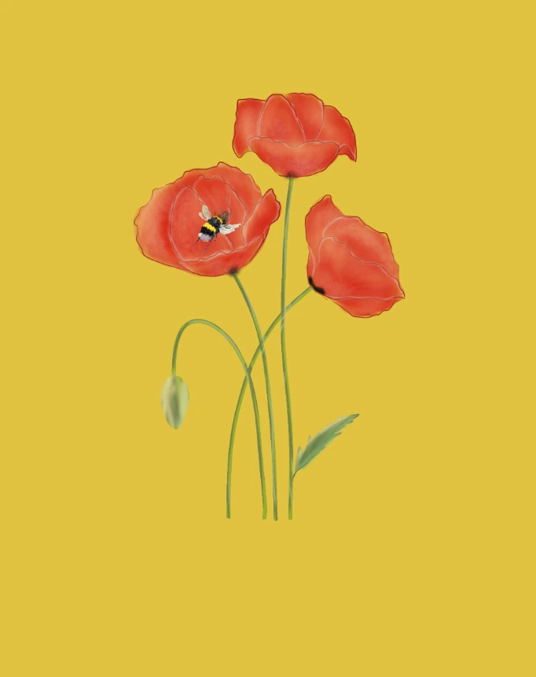
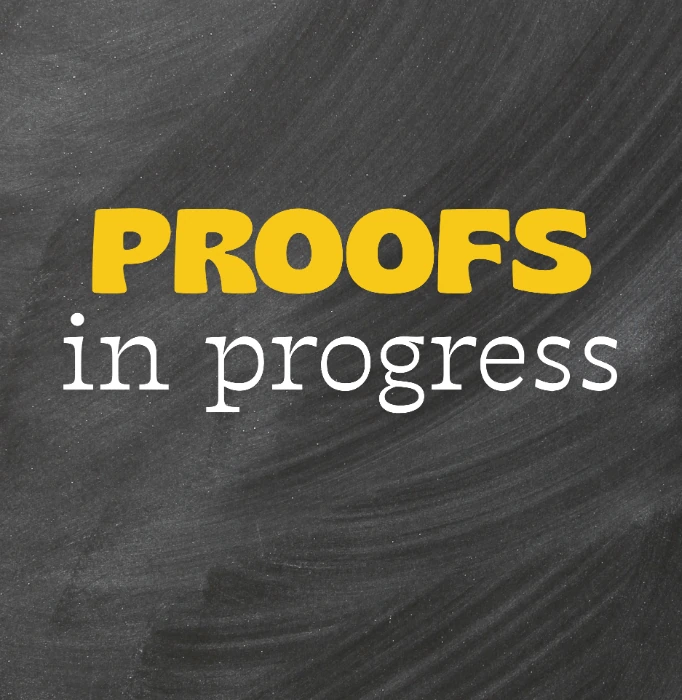
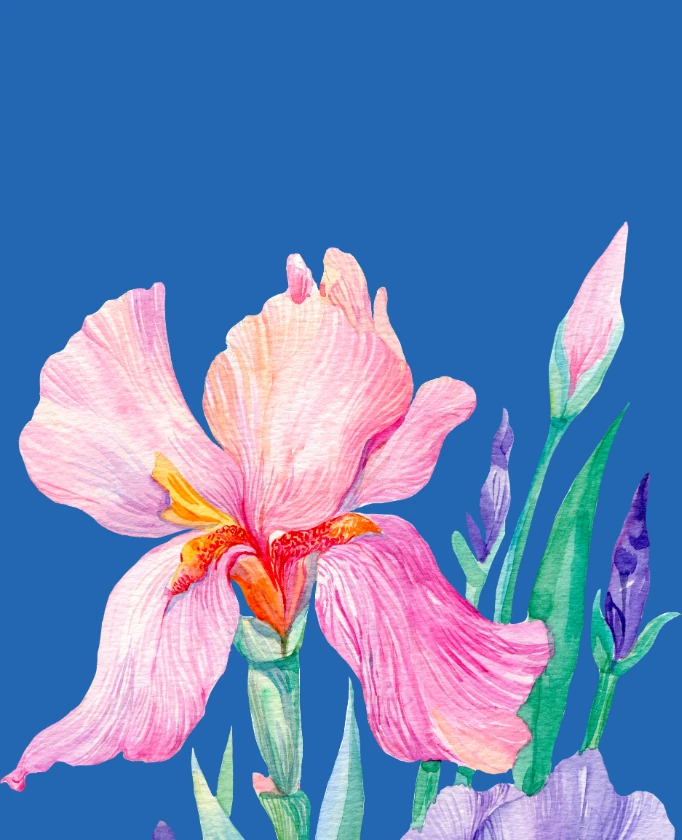
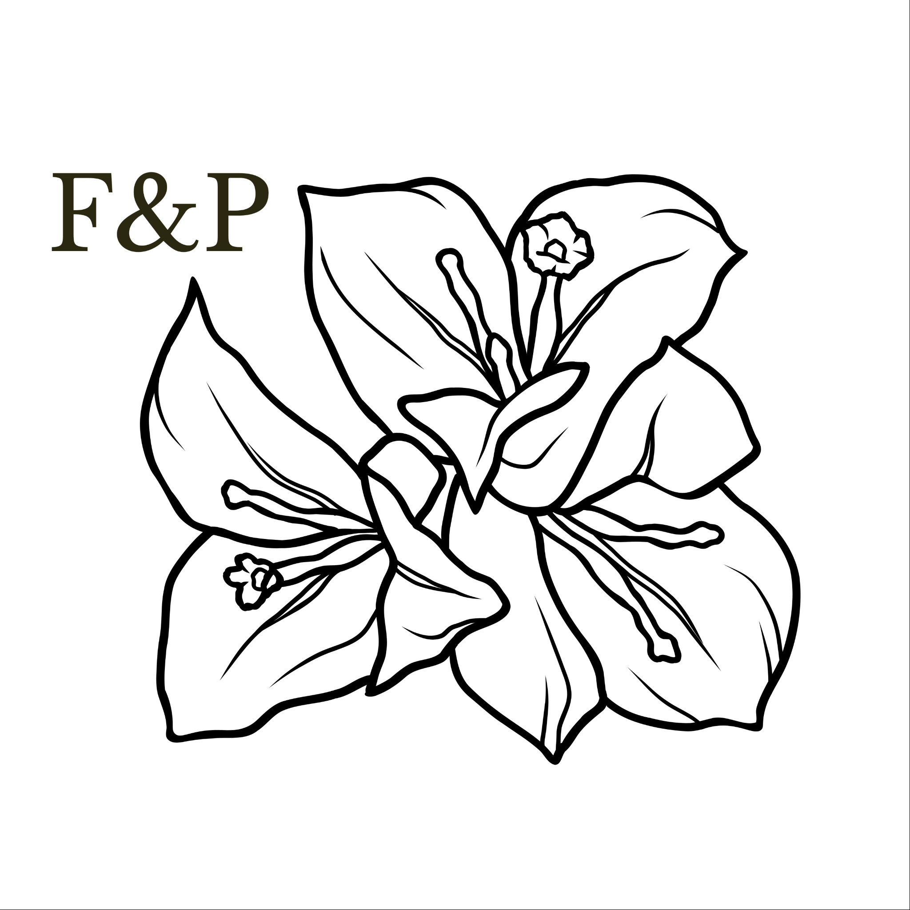

Papelería para mentes curiosas
Flores & Proofs
by Lien
Marcapáginas entre teoremas.
Diseñado en Talca, Chile ✳ por Lien


para leer con pausay demostrar sin apuro
Colección inicial · 01
Pequeños compañeros
para grandes lecturas.


La historia detrás del nombre
Un proyecto hecho entre libros y flores.
Flowers & Proofs nació de un día a día rodeado de matemáticas. Frente a mí, el computador y justo detrás la vista de un pequeño librero con libros de Springer y flores.
Quise convertir en marcapáginas ese pequeño mundo.
Conoce la primera colección Proofs in Progress.
Con cariño, Lien
Marcapáginas
entre teoremas.